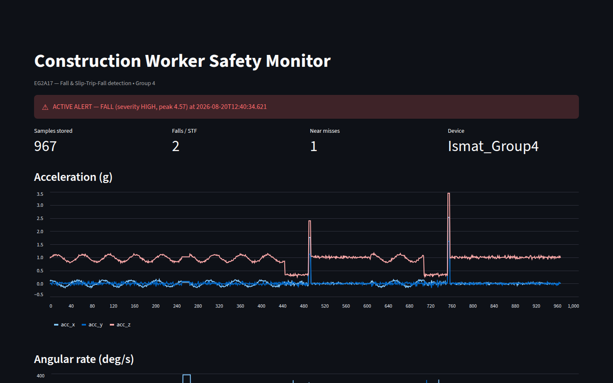
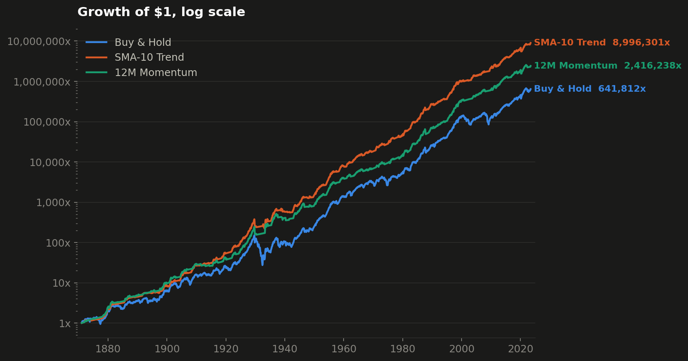
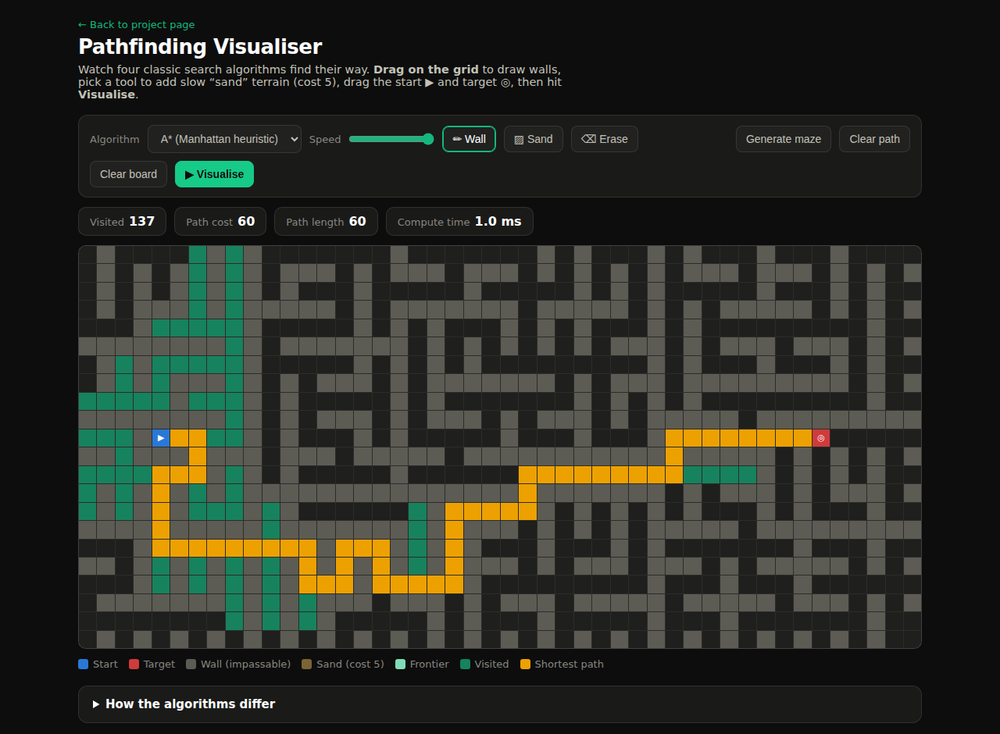

Hi, I'm Ismat. I like taking a problem all the way through the pipeline: collecting raw data, cleaning and storing it properly, writing the logic that turns it into decisions, and putting the result on screen. Below are three projects that walk that path — a wearable safety monitor, a 155-year market backtest, and an interactive algorithm visualiser.
Three end-to-end builds: an IoT safety pipeline, a quantitative finance study, and a software-engineering piece you can play with live.

Wearable IMU → BLE → Python detection engine → MariaDB → live dashboard. Detects falls, slip-trip-falls and near misses in real time.

A quantitative engine that tests trend-following against buy-and-hold on 155 years of real market data — with the risk numbers to match.

A*, Dijkstra, BFS and Greedy search animated on an interactive grid — draw walls, generate mazes and race the algorithms. Runs live in your browser.
I'm a Diploma in AI & Data Engineering student at Nanyang Polytechnic's School of Engineering. What I enjoy most is the unglamorous middle of a data project — validation, storage schemas, detection logic — because that's where a demo either becomes reliable or falls apart.
This year my team built a wearable safety monitor for construction workers, which meant working with live Bluetooth sensor streams, tuning detection thresholds against recorded ground truth, and keeping a database honest at 100 samples per second. On my own time I apply the same pipeline thinking to other domains: financial backtesting and classic computer-science algorithms.
I'm working towards roles in data engineering, software engineering and quantitative development.
The best places to see my work and get in touch.